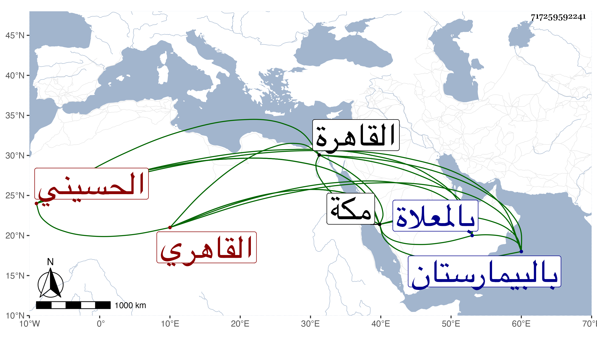

0902Sakhawi.DawLamic.ITO20230111-ara1.EIS1600.717259592241
Biography ID: 717259592241
1038
محمد بن أحمد بن صدقة وسمى جده مرة عبد الله الشمس القاهري الحسيني ويعرف بابن الشاهد . كان تاجرا حسن الخط فغرق في أموال الناس وأملق فانقطع للنسخ بالاجرة ثم جلس شاهدا فلم يظفر بطائل وساعده العز بن المراحلي في كثير من رفاء ديونه وحمله معه في سنة خمس وثمانين لمكة فأقام فيها تحت ظله وربما شهد في باب السلام إلى أن مات بعد تعلله مدة في جمادى الأولى سنة ست وثمانين بالبيمارستان ودفن بالمعلاة وهو ممن سمع على بالقاهرة ثم بمكة وكتب من تصانيفي أشياء ، وقد حج قبل فقره أيضا برا وبحرا وجاور ، وتنزل في صوفية البيبرسية وكان ساكنا لا بأس به رحمه الله وعفا عنه .
